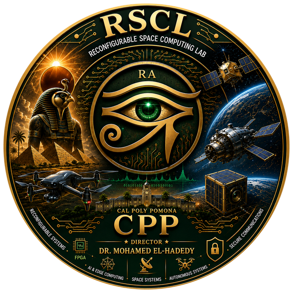
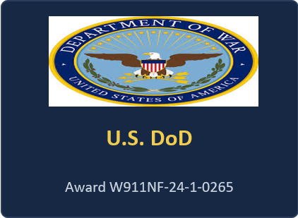
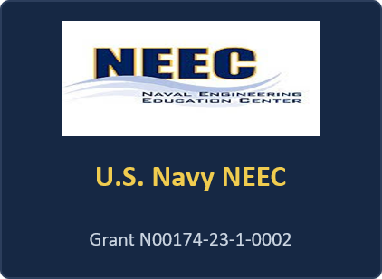
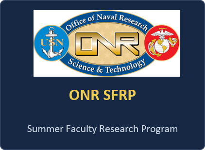

Every timing question is a race: the data against the clock edge. Race the Clock turns setup, hold, skew and Fmax into four worlds you play in the browser, on the circuits from ECE 3300 and on endless new ones.
RSCL research is supported by:


